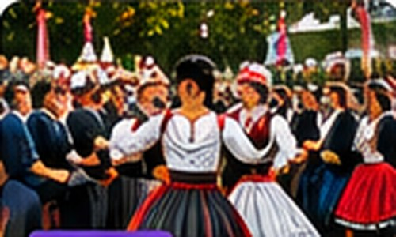
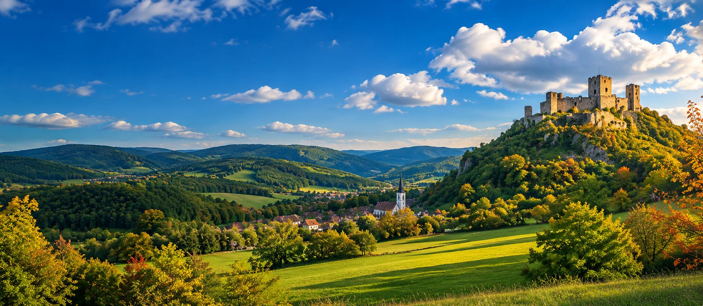

MINTAHÍR · HELYI INFORMÁCIÓ
MINTAHÍR · HELYI INFORMÁCIÓ
Így jelennek majd meg a települési hírek
Helyi bejelentések, közlekedési tudnivalók és ellenőrzött közlemények település szerint.
A Palócföld hírei, információi, közössége
131 település egy helyen
MINTAHÍR · HELYI INFORMÁCIÓ
Helyi bejelentések, közlekedési tudnivalók és ellenőrzött közlemények település szerint.




Keress a 131 nógrádi település között. A lista a helyben tárolt adatállományt használja.
Munkaadói ajánlatok és álláshirdetések számára fenntartott felület.
Jelenleg nincs ellenőrzött állásajánlatVállalkozók, mesterek, szolgáltatások és céges bemutatkozások.
Vállalkozói adatlapok későbbFalusi élet, közösségi kezdeményezések, kertészeti tapasztalatok és helyi kérdések.
Közösségi beküldés még nem aktív